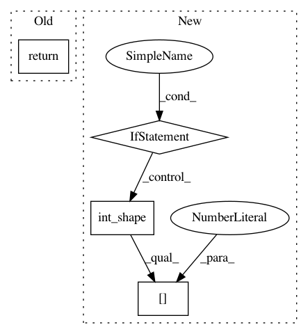

3c9a0f9e53742ae95b394e2016b1a3a391049d77,lib/model/layers.py,KResizeImages,call,#KResizeImages#Any#,211
Before Change
tensor
A tensor or list/tuple of tensors
return K.resize_images(inputs,
self.size,
self.size,
"channels_last",
interpolation=self.interpolation)
def compute_output_shape(self, input_shape):
Computes the output shape of the layer.
After Change
tensor
A tensor or list/tuple of tensors
if isinstance(self.size, int):
retval = K.resize_images(inputs,
self.size,
self.size,
"channels_last",
interpolation=self.interpolation)
else:
// Arbitrary resizing
size = int(round(K.int_shape(inputs)[1] * self.size))
if get_backend() != "amd":
retval = tf.image.resize(inputs, (size, size), method=self.interpolation)
else:
raise NotImplementedError
return retval
def compute_output_shape(self, input_shape):
Computes the output shape of the layer.
This is the input shape with size dimensions multiplied by :attr:`size`
In pattern: SUPERPATTERN
Frequency: 3
Non-data size: 4
Instances
Project Name: deepfakes/faceswap
Commit Name: 3c9a0f9e53742ae95b394e2016b1a3a391049d77
Time: 2021-03-01
Author: 36920800+torzdf@users.noreply.github.com
File Name: lib/model/layers.py
Class Name: KResizeImages
Method Name: call
Project Name: keras-team/keras
Commit Name: 65a215646c653ab808170c8b8c10de2945262613
Time: 2017-04-07
Author: myutwo150@users.noreply.github.com
File Name: keras/backend/theano_backend.py
Class Name:
Method Name: in_top_k
Project Name: keras-team/keras
Commit Name: 75bef59016a8a230823a04836e1ab6e5bf0079dc
Time: 2016-04-01
Author: francois.chollet@gmail.com
File Name: keras/backend/tensorflow_backend.py
Class Name:
Method Name: dot